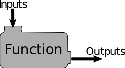
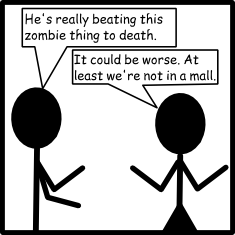

Chapter 10: Being Lazy with Functions
“Most of you are familiar with the virtues of a programmer. There are three, of course: laziness, impatience, and hubris.”
-Larry Wall (Creator of Perl)
You know how you're lazy? And I don't just mean a little lazy, like I am. I mean you're so lazy that you'd have someone else brush your teeth. So lazy that you'd probably do anything to avoid writing a few extra lines of code. Don't worry, I'm here to help. Programmers are some of the laziest people in the world. In fact, a good programmer will go out of his way and do extra work just to make sure he doesn't need to do it a second time.
Functions are a simple way to avoid needing to do something more than once. For example, chances are, on a fairly regular basis you need to generate a list of numbers. You and I both know that the best way to do it is by using range(). But imagine if there was no range(). You'd need to build a list every single time you wanted a simple range! You'd be writing extra lines all the time. range() is a function.
Functions work just like they do in math. Remember this picture?
You give a function some input, it gives you some output. Let's write a super, super easy function, in math.
ƒ(x) = x*x
Tada! It's the square function. In math, it's tradition to name your functions things like f, or g. In Python, it's traditional to give your functions names that make sense. Let's rewrite the square function in Python.
- def square(x):
- return x*x
Notice that we didn't write a complete program. If you run that program, it will do absolutely nothing at all. But we've made easy to reuse code. We've made it easier to be lazy. Now, anywhere you'd like to find the square of a number, just write square and put a number inside the parenthesis.
- def square(x):
- return x*x
- print "The square of 5 is", square(25)
- print "The square of 4 is", square(16)
Functions make us use two new keywords. One is def, which is short for define. We're defining a function. The second is return, which is a little bit more confusing. Return gives a function a single value. This way you can use a function as though it's a number or String. For example, Python has a function called sum(), which you can use to find the sum of a list. We can use this function as though it's a value:
- a = [1,2,3,4]
- b = [6,7,8,9]
- print "The sum of a is:", sum(a)
- print "The sum of b is:", sum(b)
- print "The sum of both lists is:", sum(a) + sum(b)
The sum of a is: 10 The sum of b is: 30 The sum of both lists is: 40
See how we needed to print the result of each function call? When Python wanted to do the line print "The sum of a is:", sum(a), it first calculated what the value of sum(a) was, and then gave that value to print for outputting to the screen.
Real Functions
Let's go back to our zombie simulator.
Do you remember when we made this?
- zombies = {'braaain':{'speed':5,'swim':False,'height':70,'dance':"not bad"},'grawg':{'speed':3,'swim':True,'height':70,'dance':"Excellent"}}
Let's write some simple functions to modify it. Let's start with a useful function, called fastest_zombie_speed. This function will find the speed of the fastest zombie, so that we know how fast we need to run to stay safe.
- zombies = {'braaain':{'speed':5,'swim':False,'height':70,'dance':"not bad"},'grawg':{'speed':3,'swim':True,'height':70,'dance':"Excellent"}}
- def fastest_zombie_speed(group=zombies):
- fastest = 0
- for zombie_name, zombie_stats in group.iteritems():
- if zombie_stats['speed'] > fastest:
- fastest = zombie_stats['speed']
- return fastest
- print fastest_zombie_speed()
5
We're adding something else here. In the parenthesis, you can see where it says group=zombie. group is what's called a parameter to the function. It's a value we give the function to work on. In this case, we're giving fastest_zombie the dictionary that contains all of our zombies. This way the function knows which set of zombies it needs to search. The =zombies is the default value. When you use fastest_zombie_speed, you can just call it by writing fastest_zombie_speed() - you don't need to give it a dictionary to search - it'll just assume you want to search the dictionary zombies, that we created earlier. This is useful if there are multiple packs of zombies out there hunting for you.
Void Functions
As previously discussed, we know that despite our best efforts, the number of zombies likely to be chasing us is going to increase. We need an easy way to add another zombie. Our previous method was to add another zombie to our dictionary:
- zombies = {'braaain':{'speed':5,'swim':False,'height':70,'dance':"not bad"},'grawg':{'speed':3,'swim':True,'height':70,'dance':"Excellent"}}
But that takes forever, and there's a chance we'll make a tiny little typo and miss a comma or colon or something and then Python will crash and the zombies will get us. Let's write a void function, which we'll use to modify our dictionary. Since we're using names that make sense, we'll call it add_zombie.
- def add_zombie(name, speed, swim, height, dance, group=zombies):
- group[name]['speed'] = speed
- group[name]['swim'] = swim
- group[name]['height'] = height
- group[name]['dance'] = dance
First, notice that there's no return statement. That means the add_zombie function has no value. It does something, but if you were to try to get a value from add_zombie, it would do funny things.
- print add_zombie('Kelly',6,True,65,'Mediocre')
None
None. That isn't a very helpful statement, but it's completely true. add_zombie has no value, so Python can't print anything useful. So it just prints None, since there's literally no value. But even though print says it has None value, the statement still did something, and the new value of zombies is:
- print zombies
{'braaain':{'speed':5,'swim':False,'height':70,'dance':"not bad"},
'grawg':{'speed':3,'swim':True,'height':70,'dance':"Excellent"},
'Kelly':{'speed':6,'swim':False,'height':65,'dance':'Mediocre'}}
Also notice that the last parameter to the add_zombie function has a default. When we call add_zombie it'll assume we want to add zombies to the dictionary zombies, but if we want, we could add a zombie to any dictionary that we specify.
This website will be taken offline before the end of 2011